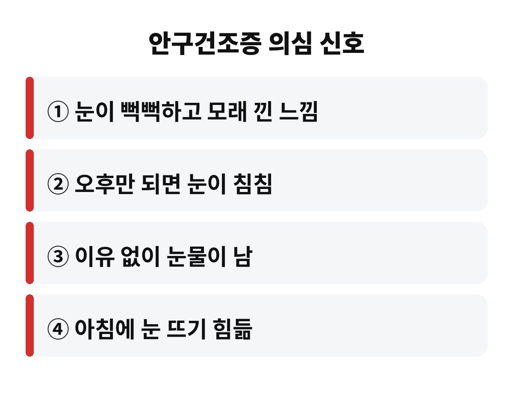
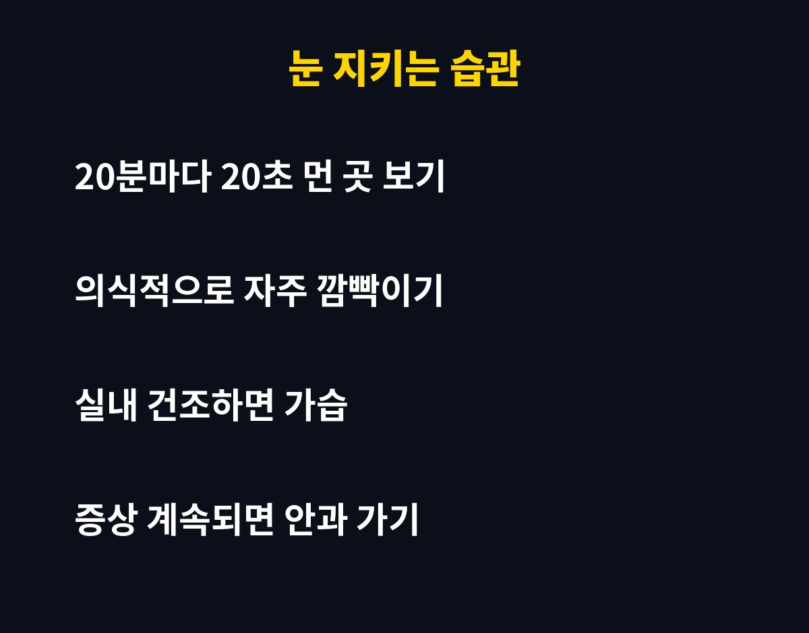

안구건조증 증상은 눈이 뻑뻑하고, 모래가 낀 듯 까끌하고, 오후만 되면 침침해지는 것이 대표적이고, 20초만 점검해 봐도 내 눈 상태를 대략 가늠할 수 있습니다. 하루 종일 화면을 보는 직장인이라면 "그냥 피곤해서겠지" 하고 넘겼던 그 불편함이 사실 어떤 신호였는지 궁금하시죠?
가장 흔한 건 눈이 뻑뻑하다는 느낌이에요. 눈을 깜빡일 때마다 뭔가 걸리는 것 같고, 모래가 들어간 듯 까끌거리기도 합니다. 반대로 이유 없이 눈물이 줄줄 나는 분도 많아요. 눈이 말라서 자극을 받으면 몸이 이를 막으려고 눈물을 쏟아내는 거라, 눈물이 난다고 해서 눈이 촉촉한 건 아니거든요.
그 밖에도 눈이 시리거나 따갑고, 빛이 유난히 눈부시고, 아침에 눈 뜨기가 힘든 것도 흔한 안구건조증 증상입니다. 이 중 두세 가지가 자주 겹친다면 한 번쯤 눈 상태를 돌아볼 때예요.

가을과 겨울로 넘어가는 이맘때는 공기가 부쩍 건조해집니다. 여기에 난방까지 켜면 실내 습도가 더 떨어지고, 눈물이 마르는 속도도 빨라지죠. 히터 바람이 얼굴 쪽으로 직접 오는 자리라면 더 불리합니다.
또 하나의 범인은 화면입니다. 모니터나 스마트폰에 집중하면 눈 깜빡임이 눈에 띄게 줄어드는데, 깜빡임이 줄면 눈물막이 고르게 퍼지지 않아요. 그래서 일을 많이 한 날일수록 오후에 눈이 침침해지는 겁니다. 렌즈를 오래 끼는 분, 수면이 부족한 분도 마찬가지로 눈이 쉽게 마릅니다.
대수롭지 않게 넘기기 쉽지만, 눈 표면이 계속 말라 있으면 작은 자극에도 상처가 나기 쉽고 염증이 생길 수도 있어요. 시야가 흐릿해져서 일이나 운전에 지장을 주기도 합니다. 그래서 가벼운 단계에서 습관부터 바로잡는 게 훨씬 이득입니다.
특히 인공눈물을 습관처럼 넣고 있는데도 나아지지 않는다면, 원인이 눈꺼풀 기름샘 문제 같은 다른 곳에 있을 수 있어요. 이럴 땐 혼자 버티기보다 안과에서 정확히 보는 게 빠릅니다.
어렵지 않아요. 먼저 20분마다 20초, 화면에서 눈을 떼고 먼 곳을 바라보세요. 이때 일부러 눈을 천천히 여러 번 깜빡여 주면 눈물이 고르게 퍼집니다. 알람을 맞춰 두면 은근히 잘 지켜져요.
두 번째는 환경이에요. 가습기나 젖은 수건으로 실내 습도를 챙기고, 히터 바람이 얼굴에 직접 닿지 않게 방향을 틀어 주세요. 세 번째는 눈 비비지 않기입니다. 가렵다고 비비면 오히려 눈 표면이 더 상합니다. 물을 충분히 마시고 잠을 잘 자는 것도 의외로 큰 도움이 되고요.

| 핵심 요약 | 뻑뻑함·침침함·눈물 줄줄이 대표 신호 |
| 원인 | 건조한 공기, 화면 장시간 보기, 깜빡임 감소 |
| 실천 | 20분마다 20초 쉬기, 습도 관리, 눈 비비지 않기 |
여러분은 하루에 화면을 몇 시간이나 보시나요? 오늘 눈이 보내는 신호를 한번 떠올려 보세요. 도움이 되셨다면 구독해 두시고, 건강 소식도 가볍게 받아보세요.
이 글은 일반적인 건강 정보이며 진단·치료를 대신하지 않습니다. 증상이 계속되면 전문의 상담을 권장합니다.